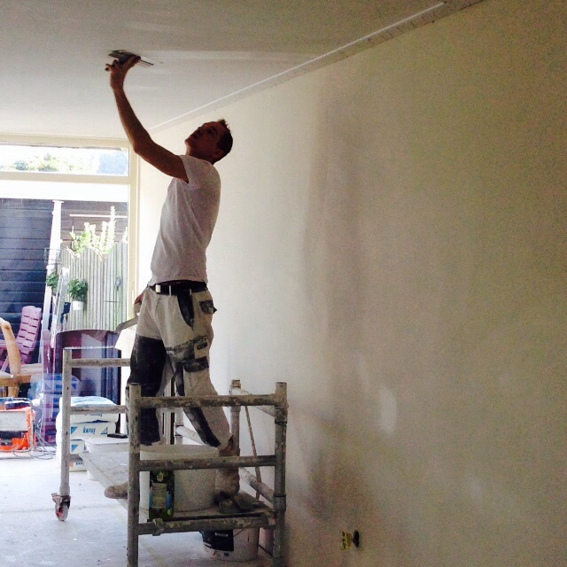

Glad pleisterwerk
Strakke wanden en plafonds, klaar voor een verfijnde afwerking.
↗Van perfect gladde wanden tot karaktervolle afwerkingen. Met aandacht voor elk detail maken we ruimtes waar je trots op bent.

ECHT VAKWERK · MISTER STUCEen mooie ruimte begint bij de juiste basis. En die basis? Die verzorgen wij.
Mister Stuc is een stukadoorsbedrijf uit Hoorn. We werken voor particulieren en bedrijven aan renovaties, nieuwbouw en decoratieve afwerkingen — in Noord-Holland en daarbuiten.
Van restauratie tot traditioneel stucwerk: je kunt rekenen op aandacht, duidelijke communicatie en een strak resultaat. Betaling vindt volgens Mister Stuc achteraf plaats.
Vertel ons over jouw project ↗Van een rustige, strakke basis tot een uitgesproken accent. De juiste afwerking maakt het verschil.
Strakke wanden en plafonds, klaar voor een verfijnde afwerking.
↗Een egale, nette ondergrond voor jouw wandbekleding.
↗Brander Stucco, Pandomo en Spachtelputz met karakter en textuur.
↗Gelijkmatig gesausde wanden en plafonds als mooie finishing touch.
↗Naden en oppervlakken professioneel gereedmaken voor de eindlaag.
↗Geen stockfoto's. Deze beelden zijn afkomstig van de bestaande website van Mister Stuc.
Deze projectnamen en locaties staan ook op de huidige website. De foto's hierboven zijn bewust niet aan specifieke projectnamen gekoppeld.
Geen ingewikkelde verhalen. Samen kijken we wat er nodig is voor een resultaat dat past bij jouw ruimte.
Stuur je wensen en vragen door. We denken graag met je mee.
We bekijken de werkzaamheden, de planning en de totaalprijs.
Met kwalitatieve materialen en oog voor detail werken we naar een strak eindresultaat.
Nick is echt een vakman welke zeer strak stucwerk afgeleverd. Hij heeft bij ons de zolder omgetoverd tot een waar paleis. Alles is naar volle tevredenheid gedaan en bij een volgende klus weten we Mister Stuc weer te vinden!
Voor een hoogwaardige afwerking werkt Mister Stuc volgens de bestaande website met materialen van onder andere deze merken.
De namen zijn als typografische aanduidingen weergegeven; officiële merklogo's worden pas toegevoegd zodra de originele bestanden beschikbaar zijn. Het gebruik van materialen betekent geen formeel samenwerkingsverband of endorsement.
Een vraag, idee of concreet project? We horen graag van je.
06 533 942 62 ↗info@mrstuc.nl ↗ORIGINELE PROJECTFOTO — MISTER STUC